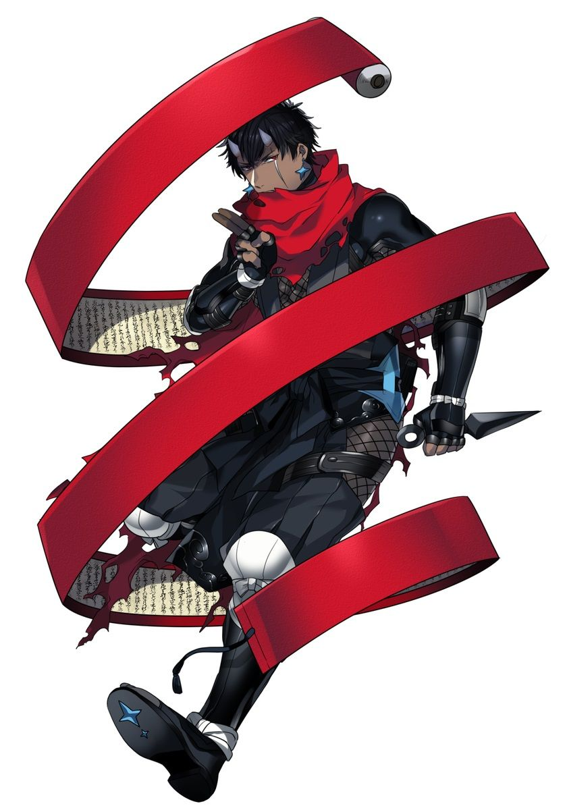

Ethan Summers
Personality: Ethan is a very determined and confident kid. He was always inspired by heroes, especially Red. They inspired him to be where he is today. He also loves to make emotional bonds with his Pokémon. This gave him the idea of giving his Pokémon nicknames. Ethan is also honest and a Trainer that keeps his word as he usually doesn't break promises to his friends, family, and Pokémon, although he does the same thing for ones that aren't his.
Age: 15
Gender: Male
Eye Color: Gray
Hair Color: Dark Brown
Skin Color: Tan
Hometown: Laverre City
Home Region: Kalos
Trivia:
Ethan’s favorite food is Matcha Macarons.
Ethan is a tactile learner, which is why he was better at battling than in normal academic classes in school.
When he traveled to Galar, Ethan made it a goal to collect all the training cards of the Gym Leaders.
Ethan has the second-best connection with Gama, his starter, the best being Jon and Lucario due to Aura.
Although his sister is the stronger battler when it comes to brute force, Ethan is more cunning and prone to creating strategies.
Ethan has very vivid dreams where he often finds himself in contact with certain legendary pokemon. Whenever Ethan seems in trouble in these dreams, without fail, Ivo will bust down Ethan’s door while screaming at him to wake up.
Pokémon:

Greninja
"Gama"
Water/Dark
Ability: Protean
Gama's type will change into that of whatever move he uses. When using a move that changes his type, Gama’s eyes flash the color of the type.
Personality: Befitting the nature of a shinobi, Gama is a calm and focused individual. He is able to maintain a level head even in crisis situations and encourages his teammates when they begin to panic. Gama is quite intelligent and is good at analyzing situations and strategies. Gama is quick to take initiative to prevent conflict and brave enough to take action in the worst of circumstances.
MOVES:
Surf (Water)
Gama pulls back his hand, forming an orb of water in front of him. He then thrusts his hand forward, slamming the orb into the opponent.
Dark Pulse (Dark)
Gama puts his hands together and creates a ball of black and purple circles. He then fires the circles as a beam of circles at the opponent.
Shadow Sneak (Ghost)
Gama creates a shadow of himself on the ground and can move it anywhere. He can then teleport to the shadow.
Acrobatics (Flying)
Gama's body glows light-blue, and he quickly zips through the air multiple times before tackling the opponent.

BURST
As a user of Burst, Ethan can use many of the abilities of the Pokémon he combines with Gama, his Greninja. Due to Gama being a ninja-based Pokémon, Ethan can implement ninja skills and the control of water into his fighting style.
TECHNIQUES:
Shadow Shrouds: Super Surf Strike
After creating multiple Shadow Shrouds with each of them holding a Surf, the clones then expand their Surf into giant orbs of water and simultaneously strike the target, resulting in an enormous amount of damage.
Shadow Shrouds: True Water Shuriken
After using Shadow Shrouds, Ethan creates an army of clones to assault his opponent, overwhelming them by attacking all sides with Acrobatics. While this happens, the real Ethan is charging a giant Surf, so powerful the water sharpens into a gigantic shuriken. As a final attack, the shrouds trap the foe in a dogpile as Ethan throws the shuriken, slashing through the clones, hitting and carrying its target into the air before exploding in a large water vortex.
Ethan uses Surf and slams the water orb into the ground, creating a large wave. The wave crashes down on the opponent.
Surf: Traditional: Shuriken Salvo
Ethan uses Surf and slams the water orb into the ground, creating a large wave that rockets towards the opponent. This wave fires swathes of water shurikens at them as well.